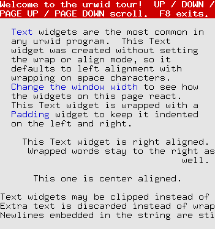
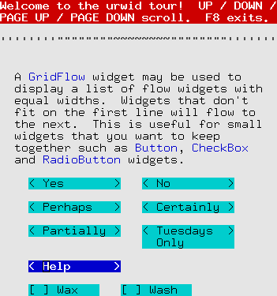
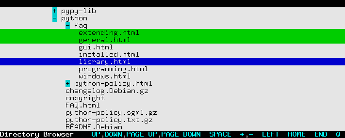
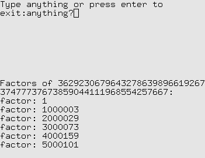
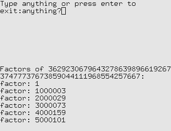
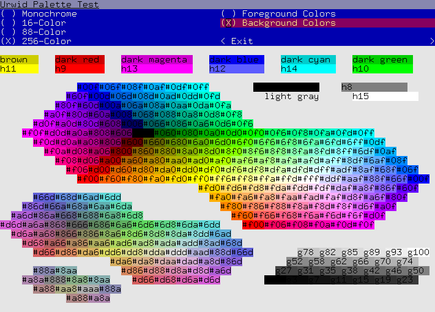
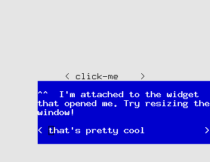
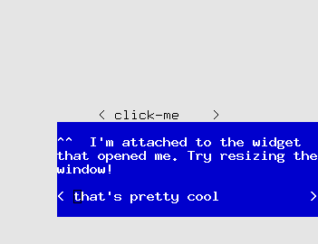
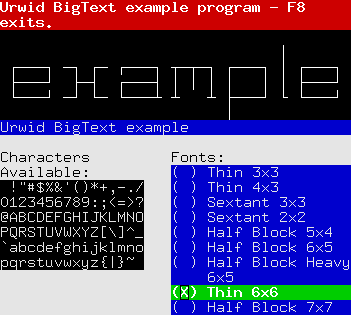

Example Programs¶
These example programs may be found in the examples directory of your Urwid distribution.
tour.py¶
 Show how many of the standard widgets may be arranged on the screen
graph.py¶

Demonstrate BarGraph widget and alarms used for animation
edit.py¶
A simple text editor with lazy loading
browse.py¶
A lazy directory browser with file selection, tree-view, custom widgets and list walker
subproc.py¶
 

Monitor and display results from a subprocess
palette_test.py¶
Show available colors in various screen modes
pop_up.py¶
 

Create a pop-up/drop-down/window anchored to another widget
bigtext.py¶

demonstrate the BigText widget